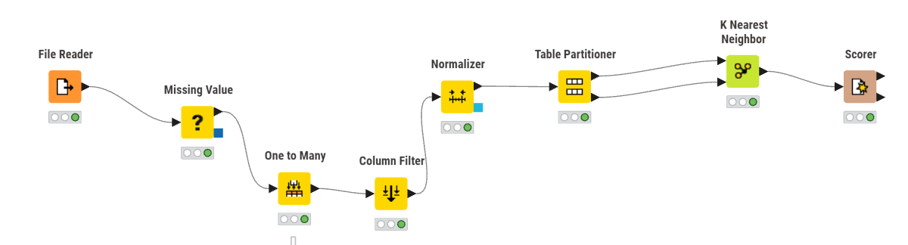
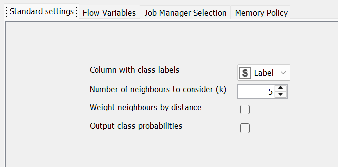
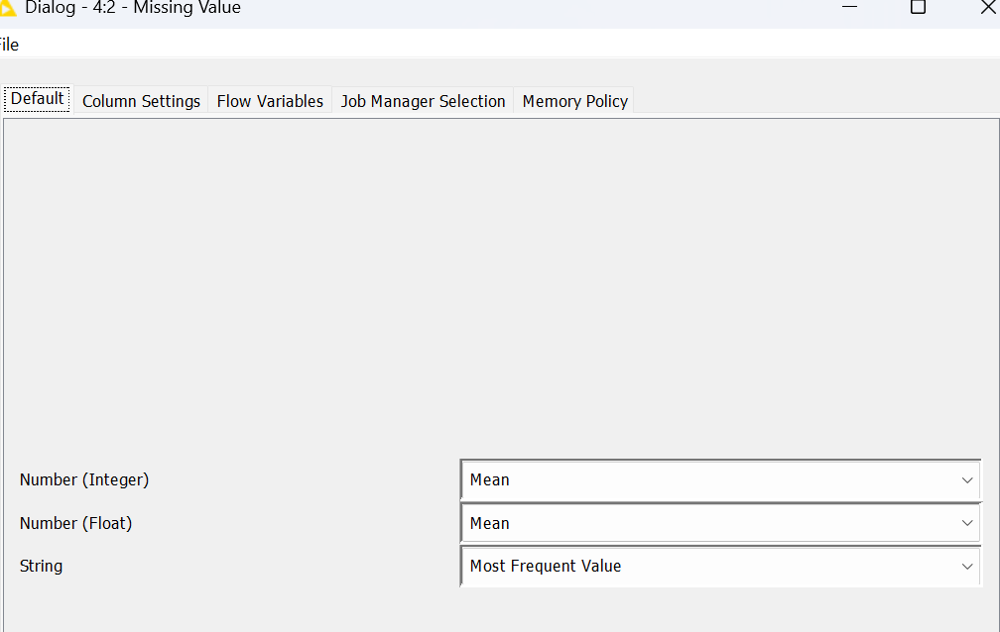
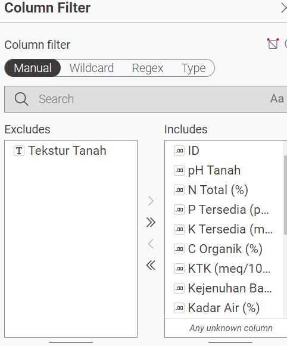
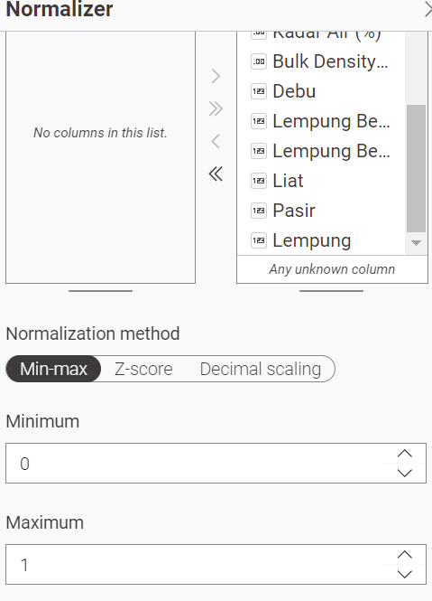
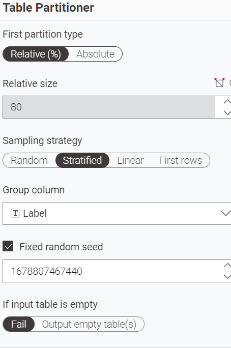
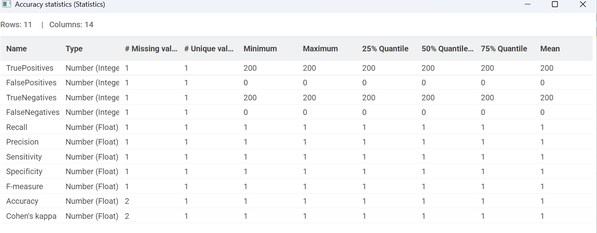
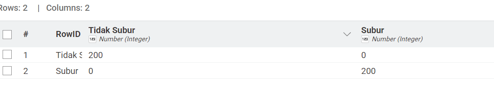
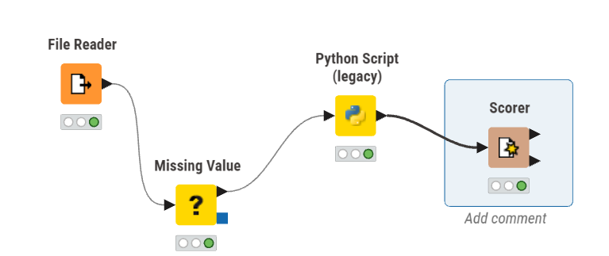

Data Understanding#
Ekplorasi data iris#
korelasi antara sepal_width dan sepal_length

Dari gambar di atas menunjukkan korelasi antara sepal_widh dan sepal_length sangat lemah atau tidak ada korelasi, dikarenakan Titik-titik data tersebar tanpa membentuk pola yang jelas, menunjukkan bahwa tidak ada hubungan yang kuat antara sepal length dan sepal width. artinya Kedua variabel ini dapat dianggap sebagai fitur yang berdiri sendiri dan tidak saling mempengaruhi secara linear.
korelasi antara petal_width dan petal_length

dari gambar di atas menunjukkan korelasi antara petal_width dan petal_length sangat kuat, dikarenakan Titik-titik data membentuk pola yang jelas dari kiri bawah ke kanan atas, menunjukkan bahwa semakin besar nilai petal_length, semakin besar pula nilai petal_width. artinya kedua variabel sangat rapat membentuk pola linear yang jelas. namun terdapat Dua cluster yang terpisah kemungkinan besar merepresentasikan iris yang berbeda, tetapi tidak menyebabkan ambigu.
korelasi antara sepal_length dan petal_length

Dari gambar di atas menunjukkan korelasi antara sepal_length dan petal_length sangat kuat, dikarenakan titik-titik data membentuk pola yang jelas dari kiri bawah ke kanan atas, menunjukkan bahwa semakin besar nilai sepal_length, semakin besar pula nilai petal_length. Artinya kedua variabel sangat rapat membentuk pola linear yang jelas. Namun terdapat dua cluster yang terpisah kemungkinan besar merepresentasikan iris yang berbeda, tetapi tidak menyebabkan ambigu.
korelasi antara sepal_length dan petal_width

Dari gambar di atas menunjukkan korelasi antara sepal_length dan petal_width sangat kuat, dikarenakan titik-titik data membentuk pola yang jelas dari kiri bawah ke kanan atas, menunjukkan bahwa semakin besar nilai sepal_length, semakin besar pula nilai petal_width. Artinya kedua variabel sangat rapat membentuk pola linear yang jelas. Namun terdapat dua cluster yang terpisah kemungkinan besar merepresentasikan iris yang berbeda, tetapi tidak menyebabkan ambigu.
korelasi antara sepal_width dan petal_length

Dari gambar di atas menunjukkan korelasi antara sepal_width dan petal_length cenderung lemah, dikarenakan titik-titik data tidak membentuk pola linear yang konsisten dari kiri bawah ke kanan atas. Terlihat adanya dua cluster yang sangat terpisah secara vertikal, di mana cluster bawah memiliki petal_length rendah dan cluster atas memiliki petal_length tinggi, namun dalam masing-masing cluster tidak ada hubungan yang jelas dengan sepal_width. Artinya kedua variabel tidak menunjukkan pola yang rapat dan penyebaran data relatif acak. Dua cluster yang terpisah ini kemungkinan besar merepresentasikan spesies iris yang berbeda dengan karakteristik yang sangat berbeda, dan pemisahan yang sangat jelas ini tidak menyebabkan ambigu.
korelasi antara sepal_width dan petal_width

Dari gambar di atas menunjukkan korelasi antara sepal_width dan petal_width lemah atau tidak konsisten, dikarenakan titik-titik data tidak membentuk pola linear yang jelas dari kiri bawah ke kanan atas. Terlihat adanya dua cluster yang sangat terpisah secara vertikal, di mana cluster bawah memiliki petal_width sangat rendah dan cluster atas memiliki petal_width lebih tinggi, namun dalam masing-masing cluster penyebaran data relatif acak tanpa menunjukkan hubungan yang kuat dengan sepal_width. Artinya kedua variabel tidak membentuk pola linear yang rapat dan peningkatan sepal_width tidak diikuti oleh peningkatan petal_width secara konsisten. Dua cluster yang terpisah ini kemungkinan besar merepresentasikan spesies iris yang berbeda, dan pemisahan yang sangat jelas ini tidak menyebabkan ambigu.
statistik dikriptif

Berdasarkan tabel statistik deskriptif di atas, dataset Iris menunjukkan karakteristik yang menarik untuk setiap variabel pengukuran. Pada sepal_length, nilai rata-rata sebesar 5.84 cm sangat dekat dengan median 5.8 cm, mengindikasikan distribusi data yang relatif simetris dan terkonsentrasi di kisaran 5-6 cm dengan variasi yang kecil. Sementara itu, sepal_width memiliki mean 3.05 cm dengan median dan mode sama-sama bernilai 3 cm, menunjukkan bahwa lebar sepal cenderung homogen antar spesies dengan penyebaran data yang rapat. Berbeda dengan pengukuran sepal, variabel petal_length dan petal_width menunjukkan pola yang lebih kompleks. Nilai mode pada petal_length (1.5 cm) dan petal_width (0.2 cm) sangat berbeda dengan median masing-masing (4.35 cm dan 1.3 cm), yang mengindikasikan adanya distribusi bimodal atau dua kelompok data yang terpisah jelas. Hal ini diperkuat oleh nilai dispersi yang lebih tinggi pada petal_width (0.63) dibandingkan variabel lainnya, menunjukkan bahwa pengukuran petal memiliki variabilitas yang lebih besar dan lebih efektif untuk membedakan antar spesies.
python (google colab)
bukti screenshot


link program
https://colab.research.google.com/drive/1GSy-86MX61px6TsFmbnX_iAG0U7MrHCT?usp=sharing
kode lengkap
import pandas as pd
from scipy import stats
df = pd.read_csv("IRIS.csv")
print("Daftar Kolom:", df.columns.tolist())
print("-" * 60)
kolom_numerik = ['sepal_length', 'sepal_width', 'petal_length', 'petal_width']
for kolom in kolom_numerik:
print(f"\n Statistik untuk kolom: {kolom.upper()}")
print("-" * 40)
print("Jumlah data :", df[kolom].count())
print("Rata-rata :", "{0:.2f}".format(df[kolom].mean()))
print("Nilai minimal :", df[kolom].min())
print("Q1 :", "{0:.2f}".format(df[kolom].quantile(0.25)))
print("Q2 (Median) :", "{0:.2f}".format(df[kolom].quantile(0.5)))
print("Q3 :", "{0:.2f}".format(df[kolom].quantile(0.75)))
print("Nilai Max :", df[kolom].max())
print("Kemencengan 1 :", "{0:.2f}".format(round(df[kolom].skew(), 2)))
print("Kemencengan 2 :", "{0:.6f}".format(round(df[kolom].skew(), 6)))
print("Standar Deviasi :", "{0:.2f}".format(round(df[kolom].std(), 2)))
print("Variansi :", "{0:.2f}".format(round(df[kolom].var(), 2)))
mode_result = stats.mode(df[kolom].dropna(), keepdims=True)
if len(mode_result.mode) > 0 and not pd.isna(mode_result.mode[0]):
print("Nilai modus : {} dengan frekuensi {}".format(
mode_result.mode[0], mode_result.count[0]))
else:
print("Nilai modus : Tidak ada modus tunggal")
print(f"\n🌸 Statistik untuk kolom: SPECIES")
print("-" * 40)
print("Jumlah data :", df['species'].count())
print("Jumlah class :", df['species'].nunique())
print("nama class :", df['species'].unique().tolist())
print("\nJumlah data per class:")
print(df['species'].value_counts())
print("\nModus (kategori paling sering):", df['species'].mode().values[0])
output
Daftar Kolom: ['sepal_length', 'sepal_width', 'petal_length', 'petal_width', 'species']
------------------------------------------------------------
Statistik untuk kolom: SEPAL_LENGTH
----------------------------------------
Jumlah data : 150
Rata-rata : 5.84
Nilai minimal : 4.3
Q1 : 5.10
Q2 (Median) : 5.80
Q3 : 6.40
Nilai Max : 7.9
Kemencengan 1 : 0.31
Kemencengan 2 : 0.314911
Standar Deviasi : 0.83
Variansi : 0.69
Nilai modus : 5.0 dengan frekuensi 10
Statistik untuk kolom: SEPAL_WIDTH
----------------------------------------
Jumlah data : 150
Rata-rata : 3.05
Nilai minimal : 2.0
Q1 : 2.80
Q2 (Median) : 3.00
Q3 : 3.30
Nilai Max : 4.4
Kemencengan 1 : 0.33
Kemencengan 2 : 0.334053
Standar Deviasi : 0.43
Variansi : 0.19
Nilai modus : 3.0 dengan frekuensi 26
Statistik untuk kolom: PETAL_LENGTH
----------------------------------------
Jumlah data : 150
Rata-rata : 3.76
Nilai minimal : 1.0
Q1 : 1.60
Q2 (Median) : 4.35
Q3 : 5.10
Nilai Max : 6.9
Kemencengan 1 : -0.27
Kemencengan 2 : -0.274464
Standar Deviasi : 1.76
Variansi : 3.11
Nilai modus : 1.5 dengan frekuensi 14
Statistik untuk kolom: PETAL_WIDTH
----------------------------------------
Jumlah data : 150
Rata-rata : 1.20
Nilai minimal : 0.1
Q1 : 0.30
Q2 (Median) : 1.30
Q3 : 1.80
Nilai Max : 2.5
Kemencengan 1 : -0.10
Kemencengan 2 : -0.104997
Standar Deviasi : 0.76
Variansi : 0.58
Nilai modus : 0.2 dengan frekuensi 28
🌸 Statistik untuk kolom: SPECIES
----------------------------------------
Jumlah data : 150
Jumlah class : 3
nama class : ['Iris-setosa', 'Iris-versicolor', 'Iris-virginica']
Jumlah data per class:
species
Iris-setosa 50
Iris-versicolor 50
Iris-virginica 50
Name: count, dtype: int64
Modus (kategori paling sering): Iris-setosa
penjelasan mengukur Jarak dengan tipe data campuran#
Latar Belakang
Dalam praktik nyata, database yang digunakan untuk analisis data sering kali tidak hanya mengandung satu jenis tipe data saja, melainkan berbagai tipe data yang tercampur menjadi satu kesatuan. Sebagai contoh, sebuah dataset dapat memuat atribut nominal seperti warna atau jenis produk, atribut binary simetris seperti jenis kelamin, atribut binary asimetris seperti hasil tes medis yang bernilai Y/N, atribut numerik berupa data interval atau rasio seperti suhu atau pendapatan, serta atribut ordinal yang memiliki tingkatan atau peringkat seperti level kepuasan atau tingkat pendidikan. Karena setiap tipe data tersebut memiliki karakteristik dan cara pengukuran yang berbeda-beda, kita tidak dapat menerapkan satu rumus jarak secara langsung untuk menghitung kemiripan atau perbedaan antar objek. Sebagai solusi, pendekatan yang dapat digunakan adalah metode pembobotan, yaitu dengan menghitung jarak untuk setiap atribut secara terpisah sesuai dengan tipe datanya, kemudian menggabungkan seluruh hasil perhitungan tersebut menggunakan rumus jarak campuran yang memperhitungkan indikator validitas setiap atribut. Dengan pendekatan ini, seluruh jenis atribut dapat berkontribusi secara proporsional dalam perhitungan jarak akhir, sehingga hasil analisis menjadi lebih akurat dan mencerminkan karakteristik data yang sebenarnya.
Rumus mengukur jarak data campuran

Keterangan:
| simbol | penjelasan |
| d(i,j) | Jarak antara objek i dan j |
| p | umlah total atribut |
| δ ij (f) | Indikator: 1 jika atribut ke-f valid untuk dibandingkan, 0 jika tidak (misal: data missing) |
| d ij (f) | Jarak untuk atribut ke-f saja |
Cara Menghitung d(f)ij per Tipe Atribut
1. Atribut Nominal atau Binary
ij(f) = 0, jika xif = xjf (nilai sama)
dij(f) = 1, jika xif ≠ xjf (nilai berbeda)
cara penghitungannya Menggunakan metode simple matching.
2. Atribut Numerik
Lakukan normalisasi terlebih dahulu agar skala seragam, misalnya dengan:

Mean Absolute Deviation: lebih robust terhadap outlier
Setelah dinormalisasi, hitung jarak dengan metode numerik (Euclidean, Manhattan, dll).
Atribut Ordinal
Langkah-langkah:
Ganti nilai dengan ranking r i f (misal: rendah=1, sedang=2, tinggi=3)

Hitung jarak menggunakan metode numerik pada nilai z i f
analisi mengunakan orange data mining untuk data yang campuran#

contoh data dengan tipe data campuran dimana ada 891 baris dan ada 9 fitur dalam data tersebut

Gambar tersebut adalah proses Preprocessing data pada software Orange Data Mining sebelum menghitung jarak atau melakukan analisis pada dataset Titanic Dataset. Preprocessing diperlukan karena data Titanic memiliki data campuran (numerik dan kategorikal), sehingga harus diolah terlebih dahulu agar bisa digunakan dalam algoritma data mining.
Continuize Discrete Variables
Pengaturan ini digunakan untuk mengubah data kategorikal menjadi numerik. Pada dataset Titanic terdapat data kategorikal seperti Sex (male / female), Embarked (S, C, Q), Pclass (kelas 1,2,3). Karena algoritma pengukuran jarak hanya bisa menghitung angka, maka data tersebut diubah menjadi numerik
Impute Missing Values
Fitur ini digunakan untuk mengisi data yang kosong (missing value). Dalam dataset Titanic terdapat data kosong pada age dan cabin

Widget Distances digunakan untuk menghitung matriks dissimilarity (jarak) antar objek dalam dataset. arameter Compare diset ke Rows yang berarti perhitungan jarak dilakukan antar objek/data point (baris dalam dataset), bukan antar atribut. Hal ini sesuai dengan konsep matriks dissimilarity, dimana matriks segitiga dihasilkan dari perhitungan jarak antar n titik data. Metric jarak yang dipilih adalah Manhattan (normalized) karena data yang saya pakai memiliki data campuran

gambar di atas merupakan hasil dari pengkuran jarak dari tipe data campuran.

Berdasarkan dendrogram, hierarchical clustering dilakukan dengan metode linkage Ward dan menghasilkan 4 cluster optimal. Pemotongan dendrogram dilakukan pada ketinggian tertentu sehingga diperoleh:
Cluster 1: sejumlah X customer, Cluster 2: sejumlah X customer, Cluster 3: sejumlah X customer, Cluster 4: sejumlah X customer,
Metode Ward linkage dipilih karena mampu menghasilkan cluster yang lebih kompak dengan meminimalkan varians dalam setiap cluster.
implementasikan data iris untuk mengukur jara di orange#

gambar diatas merupakan sebagian data mentah dari iris untuk diimplementasikan dalam menghitung jarak

gambar di atas merupakan hasil dari menghitung jarak pada data iris dimana prosesnya sama dengan yang tadi

gambar di atas merupakan visualiasi pengukuran jarak pada orange, tetapi sementara saya menggunakan widget csv file impor untuk mengimpor data iris bukan menggunakan sql table karena widget tersebut masih ada erornya atau tidak bisa di pakai dan belum menemukan solusinya
menyelesaikan Missing values dengan WKNN (manual) dan code menghitung WKNN#
Tabel Data Asli untuk mencari missing values
| No | Nama | IPK | Penghasilan_OT | Nilai_Tugas | No | Nama | IPK' | Penghasilan' | Nilai_Tugas | |
|---|---|---|---|---|---|---|---|---|---|---|
| 1 | Andi | 3.50 | 5000 | 80 | 1 | Andi | 0.7586 | 0.5385 | 80 | |
| 2 | Budi | 2.75 | 2000 | 65 | 2 | Budi | 0.2414 | 0.0769 | 65 | |
| 3 | Citra | 3.85 | 8000 | 92 | 3 | Citra | 1.0000 | 1.0000 | 92 | |
| 4 | Deni | 2.40 | 1500 | 55 | 4 | Deni | 0.0000 | 0.0000 | 55 | |
| 5 | Eva | 3.10 | 3500 | 75 | 5 | Eva | 0.4828 | 0.3077 | 75 | |
| 6 | Fajar | 3.60 | 6000 | 85 | 6 | Fajar | 0.8276 | 0.6923 | 85 | |
| 7 | Gina | 2.90 | 2500 | ? | 7 | Gina | 0.3448 | 0.1538 | ? | |
| 8 | Hadi | 3.20 | 4000 | 78 | 8 | Hadi | 0.5517 | 0.3846 | 78 | |
| 9 | Indah | 3.75 | 7500 | 88 | 9 | Indah | 0.9310 | 0.9231 | 88 | |
| 10 | Joko | 2.55 | 1800 | 60 | 10 | Joko | 0.1034 | 0.0462 | 60 |
Keterangan:
Data Asli (Kiri): Data sebelum normalisasi
Data Normalisasi (Kanan): Data setelah dinormalisasi menggunakan Min-Max Normalization (skala 0-1)
penyelesaian missing values menggunakan WKNN (manual)#
Langkah 1: Hitung Jarak dan Kemiripan (si)
Gunakan rumus jarak Euclidean untuk data multi-dimensi:
d² = Σ(xi - xj)²
si = 1/d²
Perhitungan Jarak ke Semua Baris:
1. Ke Andi (0.7586, 0.5385):
d = √(0.3448 - 0.7586)² + (0.1538 - 0.5385)²
d = √(-0.4138)² + (-0.3847)² = √0.1712 + 0.1480
d = √0.3192 ≈ 0.5650
Nilai_Tugas = 80
2. Ke Budi (0.2414, 0.0769):
d = √(0.3448 - 0.2414)² + (0.1538 - 0.0769)²
d = √(0.1034)² + (0.0769)² = √0.0107 + 0.0059
d = √0.0166 ≈ 0.1288
Nilai_Tugas = 65
3. Ke Citra (1.0000, 1.0000):
d = √(0.3448 - 1.0)² + (0.1538 - 1.0)²
d = √(-0.6552)² + (-0.8462)² = √0.4293 + 0.7161
d = √1.1454 ≈ 1.0703
Nilai_Tugas = 92
4. Ke Deni (0.0000, 0.0000):
d = √(0.3448 - 0.0)² + (0.1538 - 0.0)²
d = √(0.3448)² + (0.1538)² = √0.1189 + 0.0237
d = √0.1426 ≈ 0.3777
Nilai_Tugas = 55
5. Ke Eva (0.4828, 0.3077):
d = √(0.3448 - 0.4828)² + (0.1538 - 0.3077)²
d = √(-0.1380)² + (-0.1539)² = √0.0190 + 0.0237
d = √0.0427 ≈ 0.2067
Nilai_Tugas = 75
6. Ke Fajar (0.8276, 0.6923):
d = √(0.3448 - 0.8276)² + (0.1538 - 0.6923)²
d = √(-0.4828)² + (-0.5385)² = √0.2331 + 0.2900
d = √0.5231 ≈ 0.7233
Nilai_Tugas = 85
7. Ke Hadi (0.5517, 0.3846):
d = √(0.3448 - 0.5517)² + (0.1538 - 0.3846)²
d = √(-0.2069)² + (-0.2308)² = √0.0428 + 0.0533
d = √0.0961 ≈ 0.2802
Nilai_Tugas = 78
8. Ke Indah (0.9310, 0.9231):
d = √(0.3448 - 0.9310)² + (0.1538 - 0.9231)²
d = √(-0.5862)² + (-0.7693)² = √0.3436 + 0.5918
d = √0.9354 ≈ 0.9672
Nilai_Tugas = 88
9. Ke Joko (0.1034, 0.0462):
d = √(0.3448 - 0.1034)² + (0.1538 - 0.0462)²
d = √(0.2414)² + (0.1076)² = √0.0583 + 0.0116
d = √0.0699 ≈ 0.2644
Nilai_Tugas = 60
Kita hitung untuk 5 tetangga terdekat Gina:
| Tetangga | Selisih IPK (xi - xj) | Selisih Penghasilan (xi - xj) | Kuadrat (d²) | Kemiripan (si) |
|---|---|---|---|---|
| Budi | 0.3448 - 0.2414 = 0.1034 | 0.1538 - 0.0769 = 0.0769 | 0.0107 + 0.0059 = 0.0166 | 60.2410 |
| Eva | 0.3448 - 0.4828 = -0.1380 | 0.1538 - 0.3077 = -0.1539 | 0.0190 + 0.0237 = 0.0427 | 23.4192 |
| Joko | 0.3448 - 0.1034 = 0.2414 | 0.1538 - 0.0462 = 0.1076 | 0.0583 + 0.0116 = 0.0699 | 14.3062 |
| Hadi | 0.3448 - 0.5517 = -0.2069 | 0.1538 - 0.3846 = -0.2308 | 0.0428 + 0.0533 = 0.0961 | 10.4058 |
| Deni | 0.3448 - 0.0000 = 0.3448 | 0.1538 - 0.0000 = 0.1538 | 0.1189 + 0.0237 = 0.1426 | 7.0126 |
Langkah 2: Hitung Estimasi Menggunakan Weighted Average
Kita gunakan rumus (2): kali setiap Nilai Tugas (yj) dengan Kemiripan (si), lalu bagi dengan total Kemiripan.
A. Pembilang (Σ si · yjh):
- Budi: 60.2410 × 65 = 3915.665
- Eva: 23.4192 × 75 = 1756.440
- Joko: 14.3062 × 60 = 858.372
- Hadi: 10.4058 × 78 = 811.652
- Deni: 7.0126 × 55 = 385.693
Total Pembilang:
3915.665 + 1756.440 + 858.372 + 811.652 + 385.693 = 7727.822
B. Penyebut (Σ si):
60.2410 + 23.4192 + 14.3062 + 10.4058 + 7.0126 = 115.3848
Hasil Akhir
ŷ = 7727.822 / 115.3848 ≈ 66.97
Kesimpulan: Nilai Tugas Gina yang hilang diisi dengan 66.97 (dibulatkan menjadi 67).
Logikanya: Budi yang paling dekat mendapat bobot terbesar (60.24) dan paling mempengaruhi hasil, sedangkan Deni yang paling jauh mendapat bobot terkecil (7.01).
penyelesaian missing values menggunakan WKNN (code)#
import math
# 1. Data latih (ternormalisasi Min-Max) — Baris 1-6 dan 8-10
train_data = [
{"nama": "Andi", "ipk": 0.7586, "po": 0.5385, "nilai": 80},
{"nama": "Budi", "ipk": 0.2414, "po": 0.0769, "nilai": 65},
{"nama": "Citra", "ipk": 1.0000, "po": 1.0000, "nilai": 92},
{"nama": "Deni", "ipk": 0.0000, "po": 0.0000, "nilai": 55},
{"nama": "Eva", "ipk": 0.4828, "po": 0.3077, "nilai": 75},
{"nama": "Fajar", "ipk": 0.8276, "po": 0.6923, "nilai": 85},
{"nama": "Hadi", "ipk": 0.5517, "po": 0.3846, "nilai": 78},
{"nama": "Indah", "ipk": 0.9310, "po": 0.9231, "nilai": 88},
{"nama": "Joko", "ipk": 0.1034, "po": 0.0462, "nilai": 60},
]
# 2. Data target: Gina (yang dicari)
target_ipk = 0.3448
target_po = 0.1538
print("=== PERHITUNGAN JARAK (EUCLIDEAN DISTANCE) ===")
hasil_jarak = []
for d in train_data:
jarak = math.sqrt((d["ipk"] - target_ipk)**2 + (d["po"] - target_po)**2)
hasil_jarak.append({"nama": d["nama"], "jarak": jarak, "nilai": d["nilai"]})
hasil_jarak.sort(key=lambda x: x["jarak"])
for h in hasil_jarak:
print(f"Ke {h['nama']:6} -> Jarak = {h['jarak']:.4f} | Nilai_Tugas = {h['nilai']}")
print("\n=== PERHITUNGAN BOBOT WKNN (K=5) ===")
K = 5
top5 = hasil_jarak[:K]
sum_w = 0.0
sum_wv = 0.0
for t in top5:
w = 1 / t["jarak"]
sum_w += w
sum_wv += w * t["nilai"]
print(f"{t['nama']:6} (nilai={t['nilai']}) | d={t['jarak']:.4f} | w={w:.4f} | w×v={w*t['nilai']:.2f}")
print(f"\n=== HASIL AKHIR ===")
print(f"Nilai_Tugas Gina = {sum_wv:.2f} / {sum_w:.4f} = {sum_wv/sum_w:.2f}")
=== PERHITUNGAN JARAK (EUCLIDEAN DISTANCE) ===
Ke Budi -> Jarak = 0.1289 | Nilai_Tugas = 65
Ke Eva -> Jarak = 0.2067 | Nilai_Tugas = 75
Ke Joko -> Jarak = 0.2643 | Nilai_Tugas = 60
Ke Hadi -> Jarak = 0.3100 | Nilai_Tugas = 78
Ke Deni -> Jarak = 0.3775 | Nilai_Tugas = 55
Ke Andi -> Jarak = 0.5650 | Nilai_Tugas = 80
Ke Fajar -> Jarak = 0.7232 | Nilai_Tugas = 85
Ke Indah -> Jarak = 0.9672 | Nilai_Tugas = 88
Ke Citra -> Jarak = 1.0702 | Nilai_Tugas = 92
=== PERHITUNGAN BOBOT WKNN (K=5) ===
Budi (nilai=65) | d=0.1289 | w=7.7603 | w×v=504.42
Eva (nilai=75) | d=0.2067 | w=4.8377 | w×v=362.83
Joko (nilai=60) | d=0.2643 | w=3.7837 | w×v=227.02
Hadi (nilai=78) | d=0.3100 | w=3.2262 | w×v=251.64
Deni (nilai=55) | d=0.3775 | w=2.6487 | w×v=145.68
=== HASIL AKHIR ===
Nilai_Tugas Gina = 1491.59 / 22.2565 = 67.02
Normalisasi data#
Normalisasi data adalah teknik pra-pemrosesan yang sangat penting dalam data mining dan machine learning. Tujuannya adalah menyamakan skala seluruh variabel/fitur agar tidak ada satu atribut pun yang mendominasi atribut lain hanya karena memiliki rentang angka yang lebih besar (misalnya, membandingkan atribut Penghasilan Orang Tua dalam ribuan dengan IPK dalam satuan kecil 2–4).
Misal kita punya data mahasiswa: X = [IPK, Penghasilan_OT, Nilai_UAS, Jarak_Kampus]
Berikut adalah tiga teknik normalisasi data yang paling sering digunakan:
Dataset Sebelum Normalisasi
| No | Nama | IPK | Penghasilan_OT (rb) | Nilai_UAS | Jarak_Kampus (km) |
|---|---|---|---|---|---|
| 1 | Andi | 3.50 | 5000 | 85 | 10 |
| 2 | Budi | 2.75 | 2000 | 65 | 25 |
| 3 | Citra | 3.85 | 8000 | 92 | 5 |
| 4 | Deni | 2.40 | 1500 | 55 | 40 |
| 5 | Eva | 3.10 | 3500 | 78 | 15 |
| 6 | Fajar | 3.60 | 6000 | 88 | 8 |
| 7 | Gina | 2.90 | 2500 | 70 | 30 |
| 8 | Hadi | 3.20 | 4000 | 80 | 12 |
| 9 | Indah | 3.75 | 7500 | 90 | 6 |
| 10 | Joko | 2.55 | 1800 | 60 | 35 |
1. Min-Max Normalization
Metode ini digunakan untuk menyesuaikan nilai data agar berada dalam rentang tertentu, biasanya 0 sampai 1. Teknik ini sering dipakai pada algoritma yang menghitung jarak antar data, misalnya pada K-Means Clustering dan K-Nearest Neighbor.
- Kelebihan: Hubungan antar nilai data tetap terjaga. Output selalu dalam rentang [0, 1].
- Kelemahan: Mudah terpengaruh oleh outlier — jika ada satu data yang nilainya jauh melebihi lainnya, semua data lain akan terkompresi mendekati 0.
- Rumus:
Contoh
Mengubah nilai data agar berada pada rentang 0 sampai 1. Kolom IPK, mahasiswa Andi (IPK = 3.50):
- Nilai minimum IPK: xmin = 2.40 (Deni)
- Nilai maksimum IPK: xmax = 3.85 (Citra)
- Contoh hitung (IPK Andi = 3.50):
Artinya, IPK Andi berada di posisi 75.86% dari rentang nilai terendah ke tertinggi. Nilai 0 dimiliki Deni (terendah) dan nilai 1 dimiliki Citra (tertinggi).
Tabel Sebelum (kiri) dan Sesudah Min-Max Normalization (kanan):
| Nama | IPK | Penghasilan_OT | Nilai_UAS | Jarak_Km | IPK' | Penghasilan' | UAS' | Jarak' |
|---|---|---|---|---|---|---|---|---|
| Andi | 3.50 | 5000 | 85 | 10 | 0.7586 | 0.5385 | 0.8108 | 0.1429 |
| Budi | 2.75 | 2000 | 65 | 25 | 0.2414 | 0.0769 | 0.2703 | 0.5714 |
| Citra | 3.85 | 8000 | 92 | 5 | 1.0000 | 1.0000 | 1.0000 | 0.0000 |
| Deni | 2.40 | 1500 | 55 | 40 | 0.0000 | 0.0000 | 0.0000 | 1.0000 |
| Eva | 3.10 | 3500 | 78 | 15 | 0.4828 | 0.3077 | 0.6216 | 0.2857 |
| Fajar | 3.60 | 6000 | 88 | 8 | 0.8276 | 0.6923 | 0.8919 | 0.0857 |
| Gina | 2.90 | 2500 | 70 | 30 | 0.3448 | 0.1538 | 0.4054 | 0.7143 |
| Hadi | 3.20 | 4000 | 80 | 12 | 0.5517 | 0.3846 | 0.6757 | 0.2000 |
| Indah | 3.75 | 7500 | 90 | 6 | 0.9310 | 0.9231 | 0.9459 | 0.0286 |
| Joko | 2.55 | 1800 | 60 | 35 | 0.1034 | 0.0462 | 0.1351 | 0.8571 |
Baris Andi (tebal) = contoh yang dihitung manual di atas. Citra mendapat 1.0000 karena nilai tertinggi, Deni mendapat 0.0000 karena nilai terendah.
Min-Max New (Custom Range)
Min-Max juga bisa digunakan untuk mengubah data ke rentang baru yang kita tentukan sendiri, misalnya 0–10, −1 sampai 1, atau rentang lainnya.
- Rumus:
Contoh
Misalnya IPK Andi ingin diubah ke rentang 0 sampai 10:
2. Z-Score Normalization
Teknik ini mengubah data sehingga nilai rata-rata (mean) menjadi 0 dan standar deviasi menjadi 1. Metode ini sering digunakan ketika data memiliki skala yang berbeda atau terdapat outlier.
- Kelebihan: Lebih tahan terhadap outlier dibanding Min-Max karena mempertimbangkan penyebaran data.
- Kelemahan: Hasil normalisasi tidak memiliki batas rentang tetap seperti 0 sampai 1.
- Rumus:
(Keterangan: μ adalah rata-rata dan σ adalah standar deviasi)
Contoh
Tujuan: mengubah data sehingga mean = 0 dan standar deviasi = 1. Kolom IPK, mahasiswa Andi (IPK = 3.50):
Langkah 1 — Hitung rata-rata (μ):
Langkah 2 — Hitung standar deviasi (σ):
Langkah 3 — Masukkan ke rumus Z-Score:
Nilai positif berarti IPK Andi berada 0.6691 standar deviasi di atas rata-rata. Jika hasilnya negatif seperti Budi (−0.8068), berarti IPK Budi berada di bawah rata-rata kelompok.
Tabel Sebelum (kiri) dan Sesudah Z-Score Normalization (kanan):
| Nama | IPK | Penghasilan_OT | Nilai_UAS | Jarak_Km | IPK' | Penghasilan' | UAS' | Jarak' |
|---|---|---|---|---|---|---|---|---|
| Andi | 3.50 | 5000 | 85 | 10 | 0.6691 | 0.3461 | 0.6629 | −0.6696 |
| Budi | 2.75 | 2000 | 65 | 25 | −0.8068 | −0.9202 | −0.8610 | 0.4983 |
| Citra | 3.85 | 8000 | 92 | 5 | 1.3579 | 1.6124 | 1.1963 | −1.0590 |
| Deni | 2.40 | 1500 | 55 | 40 | −1.4956 | −1.1312 | −1.6230 | 1.6663 |
| Eva | 3.10 | 3500 | 78 | 15 | −0.1181 | −0.2870 | 0.1295 | −0.2803 |
| Fajar | 3.60 | 6000 | 88 | 8 | 0.8659 | 0.7682 | 0.8915 | −0.8254 |
| Gina | 2.90 | 2500 | 70 | 30 | −0.5117 | −0.7091 | −0.4800 | 0.8877 |
| Hadi | 3.20 | 4000 | 80 | 12 | 0.0787 | −0.0760 | 0.2819 | −0.5139 |
| Indah | 3.75 | 7500 | 90 | 6 | 1.1611 | 1.4013 | 1.0439 | −0.9811 |
| Joko | 2.55 | 1800 | 60 | 35 | −1.2004 | −1.0046 | −1.2420 | 1.2770 |
Nilai positif = di atas rata-rata. Nilai negatif = di bawah rata-rata. Baris Andi (tebal) = contoh perhitungan manual di atas.
3. Decimal Scaling
Teknik ini bekerja dengan menggeser titik desimal dari nilai data. Jumlah pergeseran desimal bergantung pada nilai absolut maksimum di dalam atribut tersebut. Ini adalah metode normalisasi yang paling mudah dihitung secara manual.
- Kelebihan: Sederhana dan mudah dihitung, tidak perlu menghitung mean atau std.
- Kelemahan: Tidak mempertimbangkan distribusi data secara keseluruhan.
- Rumus:
(Keterangan: j adalah bilangan bulat terkecil sehingga nilai mutlak maksimum dari x' kurang dari 1)
Contoh
Menggeser koma desimal. Pembaginya ditentukan oleh jumlah digit nilai terbesar di setiap kolom supaya nilai akhirnya kurang dari 1:
Kolom IPK — nilai terbesar = 3.85, bagian bulat = 3 → 1 digit → j = 1 → dibagi 101 = 10:
Kolom Penghasilan_OT — nilai terbesar = 8000 → 4 digit → j = 4 → dibagi 104 = 10.000:
Nilai j yang digunakan per kolom:
- IPK: maks = 3.85 → j = 1 → dibagi 10
- Penghasilan_OT: maks = 8000 → j = 4 → dibagi 10.000
- Nilai_UAS: maks = 92 → j = 2 → dibagi 100
- Jarak_Kampus: maks = 40 → j = 2 → dibagi 100
Tabel Sebelum (kiri) dan Sesudah Decimal Scaling (kanan):
| Nama | IPK | Penghasilan_OT | Nilai_UAS | Jarak_Km | IPK' | Penghasilan' | UAS' | Jarak' |
|---|---|---|---|---|---|---|---|---|
| Andi | 3.50 | 5000 | 85 | 10 | 0.3500 | 0.5000 | 0.85 | 0.10 |
| Budi | 2.75 | 2000 | 65 | 25 | 0.2750 | 0.2000 | 0.65 | 0.25 |
| Citra | 3.85 | 8000 | 92 | 5 | 0.3850 | 0.8000 | 0.92 | 0.05 |
| Deni | 2.40 | 1500 | 55 | 40 | 0.2400 | 0.1500 | 0.55 | 0.40 |
| Eva | 3.10 | 3500 | 78 | 15 | 0.3100 | 0.3500 | 0.78 | 0.15 |
| Fajar | 3.60 | 6000 | 88 | 8 | 0.3600 | 0.6000 | 0.88 | 0.08 |
| Gina | 2.90 | 2500 | 70 | 30 | 0.2900 | 0.2500 | 0.70 | 0.30 |
| Hadi | 3.20 | 4000 | 80 | 12 | 0.3200 | 0.4000 | 0.80 | 0.12 |
| Indah | 3.75 | 7500 | 90 | 6 | 0.3750 | 0.7500 | 0.90 | 0.06 |
| Joko | 2.55 | 1800 | 60 | 35 | 0.2550 | 0.1800 | 0.60 | 0.35 |
Baris Andi (tebal) = contoh yang dihitung manual di atas.
Implementasi dengan Sklearn dan Fungsi Kustom
Berikut adalah script Python menggunakan scikit-learn untuk Min-Max dan Z-Score, serta fungsi manual untuk Decimal Scaling.
import pandas as pd
import numpy as np
from sklearn.preprocessing import MinMaxScaler, StandardScaler
# Data asli mahasiswa
data = {
'Nama': ['Andi','Budi','Citra','Deni','Eva','Fajar','Gina','Hadi','Indah','Joko'],
'IPK': [3.50, 2.75, 3.85, 2.40, 3.10, 3.60, 2.90, 3.20, 3.75, 2.55],
'Penghasilan_OT': [5000, 2000, 8000, 1500, 3500, 6000, 2500, 4000, 7500, 1800],
'Nilai_UAS': [85, 65, 92, 55, 78, 88, 70, 80, 90, 60],
'Jarak_Kampus': [10, 25, 5, 40, 15, 8, 30, 12, 6, 35]
}
df = pd.DataFrame(data)
fitur = ['IPK', 'Penghasilan_OT', 'Nilai_UAS', 'Jarak_Kampus']
print("Data Asli:")
print(df.to_string(index=False))
# 1. Min-Max Scaling (Sklearn)
minmax_scaler = MinMaxScaler()
X_minmax = minmax_scaler.fit_transform(df[fitur])
print("\n1. Hasil Min-Max Scaling:")
print(X_minmax.round(4))
# 2. Z-Score / Standardization (Sklearn)
standard_scaler = StandardScaler()
X_standard = standard_scaler.fit_transform(df[fitur])
print("\n2. Hasil Z-Score (Standardization):")
print(X_standard.round(4))
# 3. Decimal Scaling (Custom Function)
def decimal_scaling(df_input, cols):
"""
Melakukan decimal scaling pada setiap kolom numerik.
Nilai dibagi dengan 10^j, di mana j adalah jumlah digit
dari nilai absolut terbesar pada kolom tersebut.
"""
result = df_input.copy()
for col in cols:
max_abs = result[col].abs().max()
j = len(str(int(max_abs))) # Jumlah digit nilai maks
result[col] = (result[col] / (10 ** j)).round(4)
print(f" Kolom '{col}': nilai maks = {max_abs}, j = {j}, dibagi {10**j}")
return result
print("\n3. Decimal Scaling (Fungsi Manual):")
df_decimal = decimal_scaling(df, fitur)
print(df_decimal.to_string(index=False))
Data Asli:
Nama IPK Penghasilan_OT Nilai_UAS Jarak_Kampus
Andi 3.50 5000 85 10
Budi 2.75 2000 65 25
Citra 3.85 8000 92 5
Deni 2.40 1500 55 40
Eva 3.10 3500 78 15
Fajar 3.60 6000 88 8
Gina 2.90 2500 70 30
Hadi 3.20 4000 80 12
Indah 3.75 7500 90 6
Joko 2.55 1800 60 35
1. Hasil Min-Max Scaling:
[[0.7586 0.5385 0.8108 0.1429]
[0.2414 0.0769 0.2703 0.5714]
[1. 1. 1. 0. ]
[0. 0. 0. 1. ]
[0.4828 0.3077 0.6216 0.2857]
[0.8276 0.6923 0.8919 0.0857]
[0.3448 0.1538 0.4054 0.7143]
[0.5517 0.3846 0.6757 0.2 ]
[0.931 0.9231 0.9459 0.0286]
[0.1034 0.0462 0.1351 0.8571]]
2. Hasil Z-Score (Standardization):
[[ 0.7053 0.3648 0.6988 -0.7059]
[-0.8505 -0.9699 -0.9076 0.5253]
[ 1.4313 1.6996 1.261 -1.1163]
[-1.5765 -1.1924 -1.7108 1.7565]
[-0.1245 -0.3025 0.1365 -0.2955]
[ 0.9127 0.8098 0.9397 -0.87 ]
[-0.5393 -0.7475 -0.506 0.9357]
[ 0.083 -0.0801 0.2972 -0.5417]
[ 1.2239 1.4771 1.1004 -1.0342]
[-1.2654 -1.0589 -1.3092 1.3461]]
3. Decimal Scaling (Fungsi Manual):
Kolom 'IPK': nilai maks = 3.85, j = 1, dibagi 10
Kolom 'Penghasilan_OT': nilai maks = 8000, j = 4, dibagi 10000
Kolom 'Nilai_UAS': nilai maks = 92, j = 2, dibagi 100
Kolom 'Jarak_Kampus': nilai maks = 40, j = 2, dibagi 100
Nama IPK Penghasilan_OT Nilai_UAS Jarak_Kampus
Andi 0.350 0.50 0.85 0.10
Budi 0.275 0.20 0.65 0.25
Citra 0.385 0.80 0.92 0.05
Deni 0.240 0.15 0.55 0.40
Eva 0.310 0.35 0.78 0.15
Fajar 0.360 0.60 0.88 0.08
Gina 0.290 0.25 0.70 0.30
Hadi 0.320 0.40 0.80 0.12
Indah 0.375 0.75 0.90 0.06
Joko 0.255 0.18 0.60 0.35
UTS#
Analisa Data Kesuburan Tanah (KNN)#

1 METODE#
metode yang saya gunakan adalah K-Nearest Neighbors (KNN) untuk klasifikasi tanah menjadi dua kelas: Subur dan Tidak Subur.

KNN bekerja dengan cara menghitung jarak antar data kemudian k tetangga terdekat (5) setelah itu menentukan kelas berdasarkan mayoritas tetangganyamissing value#

Node Missing Value digunakan untuk mengisi data yang kosong. Nilai numerik diisi dengan rata-rata (mean), sedangkan data teks diisi dengan nilai yang paling sering muncul. Tujuannya agar data lengkap dan siap digunakan untuk analisis.one to many#
Node One to Many digunakan untuk mengubah data kategorikal (teks) menjadi bentuk numerik biner (one-hot encoding). Misalnya, kolom Tekstur Tanah diubah menjadi beberapa kolom seperti Debu, Pasir, dll, dengan nilai 0 dan 1. Tujuannya agar data bisa diproses oleh algoritma seperti KNN yang hanya menerima data numerik.
colum filter#

Node Column Filter di KNIME Analytics Platform digunakan untuk memilih kolom yang akan dipakai atau dihapus. kolom Tekstur Tanah (teks) dihapus setelah proses encoding, sementara kolom lain termasuk Label tetap digunakan. Tujuannya agar hanya fitur yang relevan dan numerik yang masuk ke model.normalizer#

Node Normalizer di KNIME Analytics Platform digunakan untuk menyamakan skala nilai data, biasanya ke rentang 0–1 (Min-Max scaling). Hal ini penting agar semua fitur memiliki bobot yang seimbang saat dihitung jaraknya oleh algoritma seperti KNNtable partition#

Node Table Partitioning di KNIME Analytics Platform digunakan untuk membagi data menjadi data training dan testing. Biasanya menggunakan rasio 80% untuk training dan 20% untuk testing, agar model dapat dilatih terlebih dahulu lalu diuji performanya.evaluasi matrik#

Precision = 1 (100%) → semua prediksi positif benarRecall / Sensitivity = 1 (100%) → semua data positif terdeteksi
Specificity = 1 (100%) → semua data negatif terdeteksi
F-measure = 1 → keseimbangan precision & recall sempurna
Accuracy = 1 (100%) → seluruh prediksi benar
distribusi kelas#

subur= 200tidak subur 200
NAIVE BAYES#

file raider#
Fungsi: Membaca dan mengimpor data dari berbagai format file (CSV, Excel, TXT, dll)
Tujuan: Memuat dataset ke dalam workflow untuk diproses lebih lanjut
Missing Value#
Fungsi: Menangani data yang hilang atau kosong (null/NaN) dalam dataset
Tujuan:Membersihkan data sebelum analisis. Mengisi nilai yang hilang dengan berbagai. metode (mean, median, modus, atau nilai konstan). Memastikan kualitas data lebih baik untuk pemrosesan selanjutnya
Python Script (legacy)#
Fungsi: Menjalankan skrip Python kustom dalam workflow
Tujuan: Melakukan pemrosesan data yang kompleks. Implementasi algoritma machine learning. Analisis data khusus yang tidak tersedia di node standar KNIME. Transformasi data sesuai kebutuhan
import pandas as pd
from sklearn.model_selection import train_test_split
from sklearn.naive_bayes import GaussianNB
from sklearn.metrics import accuracy_score, classification_report
df = input_table_1.copy()
df = df[['Survived', 'Sex', 'Pclass']]
df['Sex'] = df['Sex'].map({'male': 0, 'female': 1})
df = df.dropna()
X = df[['Sex', 'Pclass']]
y = df['Survived'].astype(int)
X_train, X_test, y_train, y_test = train_test_split(
X, y, test_size=0.2, random_state=42
)
model = GaussianNB()
model.fit(X_train, y_train)
y_pred = model.predict(X_test)
print("Akurasi:", accuracy_score(y_test, y_pred))
print(classification_report(y_test, y_pred))
df['prediction'] = model.predict(X)
output_table_1 = df
Analisis Naive Bayes - Penjelasan Langkah demi Langkah#
Baris Kode |
Fungsi & Penjelasan |
|---|---|
|
Mengimpor library yang dibutuhkan: pandas (manipulasi data), scikit-learn (pemodelan & evaluasi) |
|
Mengambil data dari port input KNIME. |
|
Seleksi kolom: Hanya mempertahankan 3 kolom. Kolom lain (seperti Age, Fare, Embarked) diabaikan |
|
Encoding kategorikal: Mengubah teks ‘male’/‘female’ menjadi angka 0/1 karena algoritma machine learning hanya menerima input numerik |
|
Handling missing value: Menghapus baris yang mengandung nilai kosong (NaN) pada kolom yang dipilih agar tidak menyebabkan error saat training |
|
Pemisahan fitur & target: X adalah data fitur (input), y adalah label/target |
|
Memisahkan variabel target (Survived) untuk supervised learning |
|
Mengimpor algoritma Gaussian Naive Bayes dari scikit-learn |
|
Membuat instance/model Naive Bayes yang siap digunakan |
|
Training model: Melatih model dengan data X (fitur) dan y (target) |
|
Prediksi: Menggunakan model yang sudah dilatih untuk memprediksi data yang sama |
|
Mengimpor fungsi untuk menghitung akurasi model |
|
Menghitung akurasi dengan membandingkan prediksi dengan nilai sebenarnya |
|
Menampilkan hasil akurasi dalam bentuk persentase |
Akurasi: 0.7821229050279329
precision recall f1-score support
0 0.80 0.84 0.82 105
1 0.75 0.70 0.73 74
accuracy 0.78 179
macro avg 0.78 0.77 0.77 179
weighted avg 0.78 0.78 0.78 179